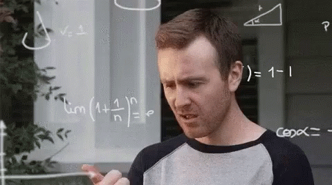

![]()
I am excited to announce the first official release of the Bayesian Measurement Modeling R package! bmm makes Bayesian measurement modeling in psychology accessible to all. Over the past two years, Gidon Frischkorn and I worked closely together on this package and we are thrilled to finally share it with the world.
Aside from the final result, this collaboration was the most fun I’ve had doing research in a long time. I stopped counting how many days we started a random unplanned coffee chat and to suddenly realize that it’s been three hours of intense problem-solving, only because one of us was actually late for a real meeting. bmm is truly both of our baby (only slightly older that Gidon’s soon-to-be second flesh-and-blood daughter!) and we hope it will make fitting Bayesian measurement models easier, more reliable, and more efficient for everyone.
You can find detailed documentation, tutorials and examples on the package website. You can install bmm from CRAN as follows:
install.packages("bmm")What is bmm for?
bmm provides a simple and intuitive interface for fitting measurement models in psychology using Bayesian methods. It is designed to be accessible to researchers with little to no experience with Bayesian statistics or cognitive modeling. If you know how to fit a mixed-effects regression model in R, you already know nearly everything you need to fit a measurement model with bmm.

But first things first: what are measurement models and why do we need them?
If you are a meteorologist, you can measure atmospheric temperature with a thermometer. And while thermometers are technically indirect measures, the relationship between the volume of a liquid and its temperature is so strong and so well understood that we take it for granted.
If you are a psychologist, things get a bit more complicated.
Behavioral and psychological data are messy and only rough proxies for what they are supposed to measure. We rarely care about how much time it takes someone to press a button after a flashing light, how precisely they can remember a specific shade of blue, or how similar they judge two badly drawn alien animals to be. Such data are only interesting insofar as they tell us something about the underlying psychological processes that govern attention, perception, decision making, memory and categorization.
To make matters even more difficult, usually multiple distinct cognitive processes contribute to behavior. Combined, these issues often make it difficult to draw clear conclusions from behavioral data alone. Running t.tests on averaged raw behavioral data can only get you so far. Measurement models are an important tool to bridge the gap between latent psychological constructs and observable behavioral data.
Such measurement models are nowadays used in many different areas of psychology. Some of the more popular models include drift diffusion models in decision making, signal detection theory models in perception and memory, and mixture models in visual working memory. The basic idea uniting these approaches is that we can decompose one or more observed measures (e.g., reaction times, accuracy rates, angular deviation, confidence ratings) into distinct theoretically meaningful parameters that reflect latent psychological processes (e.g., decision thresholds, different memory strength signals, the quality or precision of representations). These derived parameters can then be used to test hypotheses about the underlying cognitive processes that govern behavior.
The challenges of measurement modeling
Unfortunately, technical challenges have prevented widespread adoption of measurement models for data analysis in psychology. And even when researchers do use these models, many (*cough *) rely on ad-hoc custom implementations that are not well-documented, not well-tested, not well-understood, not easily portable to new experiments, and not using optimal inference methods. This is where bmm comes in.
Traditionally, to fit a measurement model in psychology, you had to build it yourself. The simple reality is, however, that most researchers don’t have the time, resources, or expertise to build and fit these models from scratch. This is doubly true for Bayesian hierarchical implementations, which require a different set of tools and skills than traditional maximum likelihood estimation. And even for those who do have the skills, the process can be time-consuming and error-prone.

This is why we started working on the bmm package in the first place - we were tired of doing the same thing over and over again for every new project. What started as a personal project to make our own daily work easier has now turned into a fully-fledged R package. What we have built is a package that allows you to fit a wide range of measurement models with just a few lines of code.
You no longer need to:
- copy-paste custom Jags or Stan code from one project to the next (or worse, try to decipher someone else’s code!) and painstakingly adjust it for your new experiment
- worry about whether you have correctly specified your priors or likelihoods
- worry about whether you have correctly implemented your model
- worry about how to adjust the script for your new experimental design and to spend hours debugging it
The bmm package takes care of all of that for you.
While there exist tools for some measurement models, such as for drift diffusion models (via the wiener distribution in brms for R or via the HDDM package for Python), this is not the case for the vast majority of measurement models used in psychology. The bmm package aims to fill this gap by providing a general framework that can be extended and continuously improved by the community.
Example - the Interference Measurement Model
To give you a sense of how easy it is to fit a model using the bmm package, let’s walk through an example. Let’s say you have collected data from a continuous reproduction visual working memory task (see the margin for a visual representation of the task and the distribution of the data).

{kind=link}
Assume you want to fit the Interference Measurement Model (IMM)(Oberauer et al. 2017) to your data. For convenience, we have included the data from this study in the bmm package, so we can use it directly and fit the model to it. The IMM model attributes errors to different sources of activation in memory: target features, non-target features, the spacial distance between them, and random noise1.
Before we go into the different parts, here is the entire code that you would need to fit the IMM model to the data. Yes, it’s that simple:
library(bmm)
# load the data
my_data <- oberauer_lin_2017
# inform the model about the data structure
imm_model <- imm(
resp_error = "dev_rad",
nt_features = "col_nt",
nt_distances = "dist_nt",
set_size = "set_size",
version = "full",
regex = TRUE
)
# specify the regression formula for the model parameters
imm_formula <- bmmformula(
c ~ 0 + set_size + (0 + set_size | ID),
a ~ 0 + set_size + (0 + set_size | ID),
s ~ 0 + set_size + (0 + set_size | ID),
kappa ~ 0 + set_size + (0 + set_size | ID)
)
# fit the model via `brms` and `Stan`
imm_fit <- bmm(
formula = imm_formula,
data = my_data,
model = imm_model,
cores = 4
)Let’s take a brief look at the data we are working with. In this case, the dependent variable is dev_rad - the deviation of the response from the target color (in radians). col_nt1 to col_nt7are the colors of the non-target items which were studied but are not being tested (coded relative to the target). Finally, dist_nt1 to dist_nt7 are the spatial distances of the non-target items from the target item, and set_size is the number of items in the display.
| ID | session | trial | set_size | dev_rad | col_nt1 | col_nt2 | col_nt3 | col_nt4 | col_nt5 | col_nt6 | col_nt7 | dist_nt1 | dist_nt2 | dist_nt3 | dist_nt4 | dist_nt5 | dist_nt6 | dist_nt7 |
|---|---|---|---|---|---|---|---|---|---|---|---|---|---|---|---|---|---|---|
| 1 | 1 | 1 | 7 | 0.3839724 | 0.8726646 | 0.8552113 | 2.7750735 | 2.094395 | 1.2566371 | 0.0698132 | NA | 1.9332878 | 2.416610 | 1.9332878 | 0.4833219 | 0.9666439 | 2.899932 | NA |
| 1 | 1 | 2 | 3 | -0.4537856 | 0.8552113 | 1.9547688 | NA | NA | NA | NA | NA | 1.9332878 | 2.416610 | NA | NA | NA | NA | NA |
| 1 | 1 | 3 | 5 | -0.0872665 | 0.7155850 | -2.6179939 | -1.0297443 | 1.378810 | NA | NA | NA | 0.9666439 | 2.899932 | 2.4166097 | 1.9332878 | NA | NA | NA |
| 1 | 1 | 4 | 6 | 0.3665191 | 0.2617994 | 2.0420352 | 0.1047198 | 1.099557 | -0.9250245 | NA | NA | 0.4833219 | 2.899932 | 0.9666439 | 0.9666439 | 1.9332878 | NA | NA |
| 1 | 1 | 5 | 1 | -0.0349066 | NA | NA | NA | NA | NA | NA | NA | NA | NA | NA | NA | NA | NA | NA |
| 1 | 1 | 6 | 1 | 0.1396263 | NA | NA | NA | NA | NA | NA | NA | NA | NA | NA | NA | NA | NA | NA |
To fit the IMM model to this data, we need to follow a few simple steps:
1) Specify the model
First, set up the bmmodel object to specify which variables in your data contain information about the identity of the target and non-target features, the distances between them, and the set size of the display. For the IMM model, this would look like this:
imm_model <- imm(
resp_error = "dev_rad",
nt_features = "col_nt",
nt_distances = "dist_nt",
set_size = "set_size",
version = "full",
regex = TRUE
)Here we used the regex option to specify that columns which begin with col_nt and dist_nt should be treated as non-target features and distances, respectively. This is useful when you have multiple non-target features and distances in your data (instead of enumerating them all).
2) Specify the regression formula for the model parameters
Second, specify how the parameters of the model should vary over different conditions. A list of all model parameters and their meaning is saved in the model object and can be accessed using the parameters element.
imm_model$parameters
#> $mu1
#> Location parameter of the von Mises distribution for memory responses (in radians). Fixed internally to 0 by default.
#>
#> $kappa
#> [1] "Concentration parameter of the von Mises distribution"
#>
#> $a
#> [1] "General activation of memory items"
#>
#> $c
#> [1] "Context activation"
#>
#> $s
#> [1] "Spatial similarity gradient"Using this information, we can set up the bmmformula for the different model parameters. Let’s say we want to first get an idea how all parameters vary across set_size:
imm_formula <- bmmformula(
c ~ 0 + set_size + (0 + set_size | ID),
a ~ 0 + set_size + (0 + set_size | ID),
s ~ 0 + set_size + (0 + set_size | ID),
kappa ~ 0 + set_size + (0 + set_size | ID)
)The bmmformula object is closely aligned with the brmsformula syntax and allows for an easy specification of grouped effects. In this case, we assume random effects for all parameters over the ID variable, thus implementing a hierarchical model estimating individual differences in all parameters across the different set sizes.
Take a closer look at the formula object. This is where the power and flexibility of this approach comes from. You can specify any combination of fixed and random effects for any parameter in the model. This allows you to test a wide range of hypotheses about how the parameters of the model vary across different experimental conditions. In essence, fitting a hierarchical measurement model is not much different from fitting a mixed-effects regression model. You can find a more comprehensive tutorial on the bmmformula syntax and features in the online vignette
3) Fit the model
Finally, we only need to call the bmm function to estimate the model. For this, we pass the data the specified bmmodel and bmmformula to the function. In addition, we can pass additional options to the function to customize sampling (warmup, iter, chains, cores), save the fitted model object (file), or choose the backend the model should be estimated with.
imm_fit <- bmm(
# required inputs
data = my_data,
model = imm_model,
formula = imm_formula,
# customize sampler settings
warmup = 1000,
iter = 2000,
chains = 4,
cores = 4,
# save fitted model object
file = "imm_fit"
)The bmm package is closely integrated with brms, the leading R package for Bayesian Regression Models. This allows you to use almost any post-processing and inference method implemented for brms models with the measurement models implemented in bmm
You can find more detailed introductions into the different model currently implemented in bmm on the package website. And we have also written a tutorial paper that explains more details about the implementation of several measurement models, and how to specify bmmodels in different experimental settings.
Design principles
The bmm package is built on a few key design principles, some of which were strongly inspired by the brms package for Bayesian regression modeling:
Simplicity
Fitting a cognitive measurement model should be as simple as fitting a linear, logistic or a poisson regression model. You select the model you want to fit, specify a formula to predict how each parameter of the model varies across different experimental conditions, and hit go
Flexibility
the package should be able to handle a wide range of measurement models and experimental designs. Any model for which you can write down a likelihood function should be able to be fit with bmm. And every parameter in the model should be able to vary across any combination of continuous and categorical predictors. This is a big departure from many existing techniques, which fit models separately to each experimental condition, forcing all parameters to vary across the same set of conditions, and preventing you from including continuous predictors. You should also be able to fix some parameters to specific values, or to impose complex constraints on them
Hierarhical estimation and one step inference
Rather than fitting each model separately to each participant, the package should allow you to estimate all parameters of the model simultaneously, while accounting for individual differences and benefit from shrinkage and sharing of information. As we detail in our tutorial paper, this has a number of advantages, including more stable estimates of population parameters, better generalization to new data, and more reliable estimates of individual differences (especially when there are few trials per participant)
Reliability and documentation
All models should be thoroughly tested and documented, so you can be confident that the model you are fitting is the model you think you are fitting. Each model should come with references to the relevant literature, so you can understand the theoretical background of the model and how it is implemented in bmm. The package should also provide detailed information on how to specify the model, including which parameters are available and how they can be varied across different experimental conditions
Parameter recovery
Related to the previous point, the package should be able to recover the parameters of the model from simulated data. These parameter recovery studies should be available as online vignettes and be fully reproducible, rather than being buried in the supplementary materials of academic papers (currently work in progress). Any trade-offs in the parameter recovery should be clearly documented, so you can understand the limitations of the model and how to interpret the results.
Efficiency and future-proofing
Use state-of-the-art sampling algorithms and optimization techniques to ensure that the models can be fit quickly and accurately. bmm is built on top of the brms package, which itself is an interface to the Stan probabilistic programming language. This means that the models are fit using the No-U-Turn Sampler (NUTS) algorithm, which is a state-of-the-art Hamiltonian Monte Carlo algorithm. These are packages that are actively maintained, used and supported by a large community of researchers, so that any future advances in the field of Bayesian statistics can be easily incorporated into the package as alternative backends or sampling algorithms. Furthermore, the package should be designed in a modular way, so that new models can be easily added by the community without having to change the core codebase. Finally, we have been working actively with the core developers of brms and Stan to improve sampling speed and stability of existing distributions used by our models.
Currently supported models
We currently have the following models implemented:
Visual working memory
- Interference measurement model by Oberauer and Lin (2017).
- Two-parameter mixture model by Zhang and Luck (2008).
- Three-parameter mixture model by Bays et al (2009).
- Signal Discrimination Model (SDM) by Oberauer (2023)
However, the setup of the bmm package provides the foundation for the implementation of a broad range of cognitive measurement models. In fact, we are already working on implementing additional models, such as:
- Signal-Detection Models
- Evidence Accumulation Models
- Memory Models for categorical response
If you have suggestions for models that should be added to the package, feel free to create an issue on GitHub. Ideally this should describe the model, point towards literature that gives details on the model, and if possible link to code that has already implemented the model.
Given the dynamic nature the bmm package is currently in, you can always view the latest list of supported models by running:
bmm::supported_models()So stay tuned for updates and new models! We hope you will find the bmm package useful and will try fitting one of the already available models to your data. We appreciate all feedback and hope that the bmm package will make the use of measurement models easier for everybody.
References
Oberauer, Klaus, Colin Stoneking, Dominik Wabersich, and Hsuan-Yu Lin. 2017. “Hierarchical Bayesian Measurement Models for Continuous Reproduction of Visual Features from Working Memory.” Journal of Vision 17 (5): 11. https://doi.org/10.1167/17.5.11.
Footnotes
We won’t go into much detail here - you can find a detailed explanation of the IMM model and results of the model fitting in the package documentation.↩︎
Reuse
Citation
BibTeX citation:
@online{popov2024,
author = {Popov, Vencislav},
title = {Introducing the {Bayesian} {Measurement} {Modeling} {R}
{Package} (Bmm)},
date = {2024-06-13},
url = {https://venpopov.com/posts/2024/introducing-bmm/},
langid = {en}
}
For attribution, please cite this work as:
Popov, Vencislav. 2024. “Introducing the Bayesian Measurement
Modeling R Package (Bmm).” June 13, 2024. https://venpopov.com/posts/2024/introducing-bmm/.